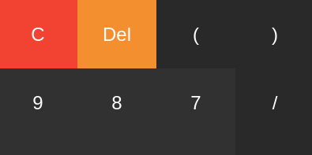

OOLO JavaScript Calculator
Description
Overview:
I had been reading through the excellent You Don't Know JavaScript series and wanted to put my newly acquired knowledge to practice. Specifically, I was interested in implementing the object-oriented "Objects Linked to Other Objects" (OOLO) model. To this end, I devised a simple calculator app in which the buttons were objects linked to a calculator object.
In additon to using OOLO, I also created a recursive descent function to handle the parsing of any expressions entered into the calculator. This allowed for complex expressions that followed order-of-operations rules.